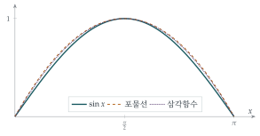

STEP II 2014, 문제 2
계속 읽기 전에 문제를 먼저 읽어 보자. 문제는 STEP Support Programme의 문제 데이터베이스에 있다: step.maths.org/questions/14-s2-q2
도입
학교에 다니는 학생이라면 누구나 \(\pi\)가 \(3\)보다 조금 크다는 것을 안다. 그렇다면 \(\pi\)의 상한(upper bound)을 어떻게 증명할 수 있을까? 아르키메데스(Archimedes)는 다각형을 이용했다. 이 문제는 전혀 예상하지 못한 방법을 쓴다. 함수에 관한 일반적인 부등식(inequality)에 간단한 포물선을 대입하면 곧바로 \(\pi^2 \leq 10\)을 읽어 낼 수 있다. 다른 함수를 고르면 유명한 근삿값 \(\pi \leq \frac{22}{7}\)을 얻는다.
부등식 \((*)\)는 비르팅거 부등식(Wirtinger’s inequality)이다. 이 부등식은 양 끝에서 \(0\)으로 고정된 함수가 “가파르지” 않으면서 “클” 수는 없다는 것을 말한다. 그 배경에는 수리물리학의 핵심 아이디어 가운데 하나가 있다. 바로 현의 진동, 양자 입자의 에너지 준위, 그리고 고윳값(eigenvalue) 이론이다.
시작하기 전에
\([0, \pi]\)의 양 끝에서 \(0\)인 함수가 가운데에서 크다면 왜 가파를 수밖에 없을까? 조건 \(\mathrm{f}(0) = \mathrm{f}(\pi) = 0\)은 왜 중요할까?
함수가 거리 \(\pi\) 안에서 \(0\)에서 어떤 높이 \(H\)까지 올라갔다가 다시 \(0\)으로 내려오려면, 적어도 \(H/(\pi/2)\)의 평균 변화율로 올라가야 한다. 따라서 도함수(derivative)가 모든 곳에서 작을 수는 없다. 양 끝의 조건이 없으면 이런 제약도 없다. 상수함수는 도함수가 \(0\)이면서도 얼마든지 클 수 있다. 부등식 \((*)\)는 이 생각을 엄밀하게 만든 것으로, “크기”와 “가파름”을 제곱의 적분(integral)으로 잰다.
차근차근 풀기
단계 1 사인파
\(\int_0^\pi \sin^2 nx\,\mathrm{d}x\)의 값은 얼마인가? \(\int_0^\pi \cos^2 nx\,\mathrm{d}x\)는? (\(\sin^2\theta = \frac12(1 - \cos 2\theta)\)를 이용하라.)
\(\int_0^\pi \cos 2nx\,\mathrm{d}x = 0\)이므로 두 값은 모두 \(\frac\pi2\)이다. \(\mathrm{f}(x) = \sin nx\)이면 \(\mathrm{f}'(x) = n\cos nx\)이므로, \(n \geq 1\)에서 \[\int_0^\pi \mathrm{f}^2 = \frac\pi2 \leq \frac{n^2\pi}{2} = \int_0^\pi (\mathrm{f}')^2,\] 이다.■ \(n = 1\)이면 등호가 성립하므로, 이 부등식은 더 이상 개선할 수 없을 만큼 날카롭다는 점에 주목하자.
단계 2 양 끝 조건이 중요하다
\(\mathrm{f}(0) \neq 0\)이면서 \((*)\)가 성립하지 않는 간단한 함수를 찾아라. 그다음 \(\mathrm{f}(0) = 0\)이지만 \(\mathrm{f}(\pi) \neq 0\)인 함수를 찾아라.
상수함수 \(\mathrm{f}(x) = 1\)은 \(\mathrm{f}(0) = 1 \neq 0\)이고, \(\int_0^\pi 1\,\mathrm{d}x = \pi > 0 = \int_0^\pi 0\,\mathrm{d}x\)이다.
두 번째 경우로, \(\mathrm{f}(x) = x\)는 \(\mathrm{f}(0) = 0\)이지만 \(\mathrm{f}(\pi) = \pi\)이고, \[\int_0^\pi x^2\,\mathrm{d}x = \frac{\pi^3}{3} \approx 10.3 > \pi = \int_0^\pi 1^2\,\mathrm{d}x.\] 이다. 따라서 두 경우 모두 \((*)\)가 성립하지 않는다.■
단계 3 포물선
\(x = 0\)과 \(x = \pi\)에서 \(0\)이 되는 이차식(quadratic)은 무엇인가? (상수배를 무시하면 하나뿐이다. 상수배가 왜 상관없을까?)
이차식은 \(x(\pi - x)\)의 상수배여야 하고, \(\mathrm{f}\)에 상수 \(k\)를 곱하면 \((*)\)의 양변에 모두 \(k^2\)이 곱해지므로 \(\mathrm{f}(x) = x(\pi - x)\), 즉 \(a = -1\), \(b = \pi\), \(c = 0\)으로 놓아도 된다. 그러면 \(\mathrm{f}'(x) = \pi - 2x\)이고, 치환(substitution) \(u = x - \frac\pi2\) (두 피적분함수를 모두 우함수(even function)로 만든다)를 쓰면 \[\begin{aligned} \int_0^\pi x^2(\pi - x)^2\,\mathrm{d}x &= \int_{-\pi/2}^{\pi/2} \left( \frac{\pi^2}{4} - u^2 \right)^2 \mathrm{d}u = \frac{\pi^5}{30}, \\ \int_0^\pi (\pi - 2x)^2\,\mathrm{d}x &= \int_{-\pi/2}^{\pi/2} 4u^2\,\mathrm{d}u = \frac{\pi^3}{3}. \end{aligned}\] 이다. (첫 번째 적분은 \(h = \frac\pi2\)로 놓고 \(\int_{-h}^{h}(h^2 - u^2)^2\,\mathrm{d}u = 2\bigl(h^5 - \frac23 h^5 + \frac15 h^5\bigr) = \frac{16}{15}h^5\)을 이용한다.) 따라서 \((*)\)는 \(\frac{\pi^5}{30} \leq \frac{\pi^3}{3}\), 즉 \[\pi^2 \leq 10. \qed\] 을 뜻한다.
단계 4 삼각함수 선택
\(\mathrm{f}(x) = p\sin\frac12 x + q\cos\frac12 x + r\)일 때, \(\mathrm{f}(0) = 0\)과 \(\mathrm{f}(\pi) = 0\)은 \(p\), \(q\), \(r\)에 어떤 조건을 주는가?
\(\mathrm{f}(0) = q + r = 0\)이고 \(\mathrm{f}(\pi) = p + r = 0\)이다. 따라서 \(p = q = -r\)이고, 상수배를 조정하여 \(\mathrm{f}(x) = \sin\frac x2 + \cos\frac x2 - 1\)로 놓는다.
이 함수에 대해 \(\int_0^\pi \mathrm{f}^2\)와 \(\int_0^\pi (\mathrm{f}')^2\)를 계산하라. \(\pi\)에 관해 어떤 부등식이 나오는가?
\(s = \sin\frac x2\), \(c = \cos\frac x2\)로 놓자. 그러면 \((s + c)^2 = 1 + 2sc = 1 + \sin x\)이므로 \[\mathrm{f}^2 = (s + c)^2 - 2(s + c) + 1 = 2 + \sin x - 2\sin\tfrac x2 - 2\cos\tfrac x2.\] 이다. \(\int_0^\pi \sin x = 2\), \(\int_0^\pi \sin\frac x2 = 2\), \(\int_0^\pi \cos\frac x2 = 2\)를 이용하면 \[\int_0^\pi \mathrm{f}^2\,\mathrm{d}x = 2\pi + 2 - 4 - 4 = 2\pi - 6.\] 이다. 또 \(\mathrm{f}' = \frac12(c - s)\)이므로 \((\mathrm{f}')^2 = \frac14(1 - \sin x)\)이고 \(\int_0^\pi (\mathrm{f}')^2\,\mathrm{d}x = \frac14(\pi - 2)\)이다. 이제 \((*)\)에서 \[2\pi - 6 \leq \frac{\pi - 2}{4} \quad\Longrightarrow\quad 8\pi - 24 \leq \pi - 2 \quad\Longrightarrow\quad \pi \leq \frac{22}{7}. \qed\] 을 얻는다.
단계 5 어느 쪽이 더 좋은가?
\(\pi \leq \frac{22}{7}\)에서 \(\pi^2 \leq \frac{484}{49} \approx 9.878\)을 얻으므로, 이것이 \(\pi^2 \leq 10\)보다 더 좋다. (실제 값은 \(\pi^2 \approx 9.870\)이다.) 이로써 \(\frac{22}{7}\)이 \(\pi\)의 상한임이 증명된다는 점에 주목하자. 전혀 다른 적분을 다루는 4.3 절에서는 이 값이 \(\pi\)와 같지 않음을 보인다.
돌아보기
일반적인 부등식, 구체적인 함수. 시험 함수를 하나 고르자 모든 함수에 관한 명제가 하나의 수에 관한 명제로 바뀌었다.
상수배 조정. \((*)\)의 양변은 같은 비율로 바뀌므로, 각 함수족에서 자유로운 상수를 하나로 고정할 수 있었다.
더 좋은 시험 함수가 더 좋은 한계를 준다. 시험 함수가 극단적인 경우인 \(\sin x\)에 가까울수록 부등식은 등호에 가까워지고, 추정도 더 좋아진다(그림 3.7.1).

숨은 수학
\((*)\)는 왜 참일까? 대학에 가면 \([0, \pi]\)에서 정의되고 양 끝에서 \(0\)이 되는 적당한 함수는 모두 푸리에(Fourier) 사인 급수(Fourier sine series) \[\mathrm{f}(x) = b_1\sin x + b_2\sin 2x + b_3\sin 3x + \cdots.\] 로 쓸 수 있다는 것을 배운다. \(m \neq n\)이면 \(\int_0^\pi \sin mx\sin nx\,\mathrm{d}x = 0\)이므로, 제곱하여 적분하면 교차항이 모두 사라져 \[\int_0^\pi \mathrm{f}^2 = \frac\pi2\bigl(b_1^2 + b_2^2 + b_3^2 + \cdots\bigr), \qquad \int_0^\pi (\mathrm{f}')^2 = \frac\pi2\bigl(1^2 b_1^2 + 2^2 b_2^2 + 3^2 b_3^2 + \cdots\bigr).\] 을 얻는다. 오른쪽 식의 각 항은 왼쪽 식의 대응하는 항보다 크거나 같으므로 \((*)\)가 증명되고, 등호는 \(\mathrm{f}\)가 \(\sin x\)의 상수배일 때만 성립한다는 것도 알 수 있다. 문제의 소문항 (i)은 항이 하나뿐인 경우이다.
진동하는 현과 양자 입자
비 \(\int (\mathrm{f}')^2 \big/ \int \mathrm{f}^2\)를 레일리 몫(Rayleigh quotient)이라 하며, \((*)\)는 \(0\)과 \(\pi\)에서 고정된 함수에 대해 이 비의 가능한 최솟값이 \(1\)이라는 것을 말한다. 이 수에는 물리적인 의미가 있다. 양 끝이 고정된 현에서 \(\int (\mathrm{f}')^2\)는 늘어남에 따른 에너지를, \(\int \mathrm{f}^2\)는 변위의 크기를 나타내며, 이 비의 최솟값이 현이 낼 수 있는 가장 낮은 음을 결정한다. 양자역학(quantum mechanics)에서는 같은 최솟값이 상자에 갇힌 입자의 가장 낮은 에너지이다. 양 끝이 고정된 파동은 휘어질 수밖에 없으므로 이 에너지는 \(0\)이 될 수 없다. 레일리 경(Lord Rayleigh)은 바로 이 방법, 즉 시험 함수를 추측하여 비를 계산하는 방법으로 진동계의 진동수를 추정했다. 극단적인 경우가 최솟값을 주므로 어떤 추측이든 실제 최저 진동수의 상한을 주며, 좋은 추측은 매우 정확한 상한을 준다.
변분법
적분의 비를 최소로 만드는 함수를 찾는 것은 변분법(calculus of variations)의 문제로, 여기서 미지의 대상은 수가 아니라 함수 전체이다. 이 경우의 최소화 함수 \(\sin x\)는 미분방정식(differential equation) \(\mathrm{f}'' + \mathrm{f} = 0\)을 만족하는데, 이것은 우연이 아니다. 적분을 최소화하면 언제나 최소화 함수에 대한 미분방정식이 나온다. 이 아이디어는 4.7 절에서 다시 다룬다.
사고 기술
어떤 함수족의 모든 함수에 대해 성립하는 부등식을 교묘하게 고른 함수에 적용하면 특정한 수에 관한 정보를 얻을 수 있다.
핵심은 고르는 솜씨에 있다. 극단적인 경우에 가까운 시험 함수(test function)는 거의 날카로운 결과를 준다. 이 아이디어는 고윳값 추정에서 유한 요소법(finite element method)에 이르기까지 해석학, 물리학, 공학 전반에 걸쳐 쓰인다.
더 도전하기
사차식. \((*)\)에 \(\mathrm{f}(x) = x^2(\pi - x)^2\)을 대입하라. 이 함수로는 \(\pi^2 \leq 12\)밖에 얻지 못함을 보여라. 이 시험 함수가 포물선보다 나쁜 이유는 무엇인가? (그 모양을 \(\sin x\)와 비교해 보라.)
두 사인파. \(\mathrm{f}(x) = \sin x + \sin 2x\)에 대해 양변을 직접 계산하여 \((*)\)를 확인하라.
다른 구간. 치환을 이용하여 \(\mathrm{g}(0) = \mathrm{g}(L) = 0\)이면 \(\displaystyle\int_0^L \mathrm{g}^2 \leq \frac{L^2}{\pi^2}\int_0^L (\mathrm{g}')^2\)임을 보여라. 이것은 길이가 다른 현에 대해 무엇을 말해 주는가?
레일리의 방법. 심화 \(\mathrm{f}(x) = x(\pi - x) + \lambda x^2(\pi - x)^2\)으로 놓고, \(\pi^2\)에 대한 한계가 가장 좋아지도록 \(\lambda\)를 정하라. (계산이 매우 복잡하므로 컴퓨터 대수 시스템을 쓰면 도움이 된다.)
더 읽을거리
T. W. Körner, Fourier Analysis (Cambridge University Press). 케임브리지의 해석학자가 쓴, 푸리에 급수와 그 응용을 폭넓게 풀어낸 훌륭한 책이다.
하디(Hardy), 리틀우드(Littlewood), 포여(Pólya), Inequalities (Cambridge University Press). 부등식에 관한 책으로, 7장에서 비르팅거 부등식과 그와 관련된 부등식들을 다룬다.
리처드 파인만(Richard Feynman), The Feynman Lectures on Physics, 제II권 19장 (“The principle of least action”, 최소 작용의 원리). 적분을 최소화하는 문제를 처음부터 끝까지 물리적 직관과 함께 다룬 파인만의 강의이다. 온라인에서 무료로 볼 수 있다.